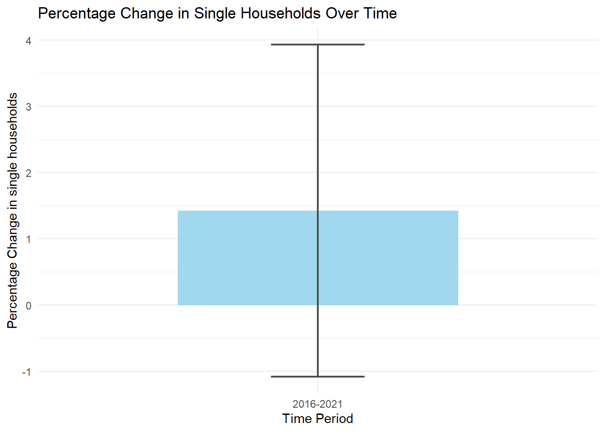
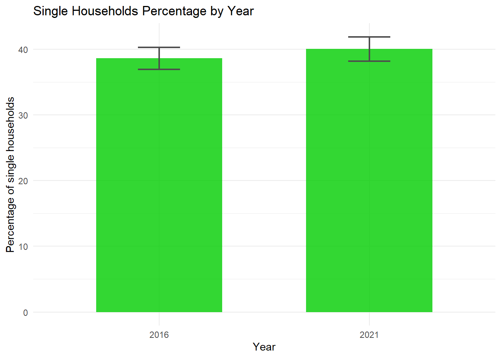

library(tidyverse)
library(tidycensus)Assignment 3: Verify the Claim?
Testing Axios’ claim about citywide change in singlehood
Setup
The question
According to reporting by Axios, the share of single-person households in Seattle more than doubled in the course of 5 years, from 17% in 2016 to 40% in 2021. The report utilized ACS (American Community Survey) 1-year data to determine this. Should this statistic be taken at face value?
In this analysis, I utilize the margins of error provided by the ACS to determine the accuracy of this claim.
Reconstruct
my_state <- "WA" # two-letter abbreviation, in quotes
my_variables <- c("B11001_008", "B11001_001")Pulling the data
city_data_t0 <- get_acs(
geography = "place",
variables = my_variables,
state = my_state,
year = 2016,
survey = "acs1"
)
city_data_t1 <- get_acs(
geography = "place",
variables = my_variables,
state = my_state,
year = 2021,
survey = "acs1"
)
single_households_t0 <- city_data_t0[grepl("Seattle", city_data_t0$NAME) & city_data_t0$variable == "B11001_008", ]
total_households_t0 <- city_data_t0[grepl("Seattle", city_data_t0$NAME) & city_data_t0$variable == "B11001_001", ]
single_households_t1 <- city_data_t1[grepl("Seattle", city_data_t1$NAME) & city_data_t1$variable == "B11001_008", ]
total_households_t1 <- city_data_t1[grepl("Seattle", city_data_t1$NAME) & city_data_t1$variable == "B11001_001", ]
single_households_t0_percent <- single_households_t0$estimate / total_households_t0$estimate * 100
single_households_t1_percent <- single_households_t1$estimate / total_households_t1$estimate * 100
cat("2016 -- Single Households / Total Households: ", single_households_t0$estimate, " / ", total_households_t0$estimate, " = ", single_households_t0_percent, "%\n")2016 -- Single Households / Total Households: 123240 / 319125 = 38.6181 %cat("2021 -- Single Households / Total Households: ", single_households_t1$estimate, " / ", total_households_t1$estimate, " = ", single_households_t1_percent, "%\n")2021 -- Single Households / Total Households: 140816 / 351650 = 40.04436 %Already, we have a discrepancy. The article states that in 2021, the rate for single households in 2021 was 40%. This matches my finding. However, in 2016, the article claims a figure of 17%, less than half the rate that I found.
Let’s find our margins of error. Perhaps that could reveal a missing link?
# computing percentage rate & its margin of error
single_households_t0_percent_moe <- moe_prop(single_households_t0$estimate, total_households_t0$estimate, single_households_t0$moe, total_households_t0$moe) * 100
single_households_t1_percent_moe <- moe_prop(single_households_t1$estimate, total_households_t1$estimate, single_households_t1$moe, total_households_t1$moe) * 100
cat("2016 margin of error:", single_households_t0_percent_moe, "% ")2016 margin of error: 1.688009 % cat("2021 margin of error:", single_households_t1_percent_moe, "% ")2021 margin of error: 1.852954 % single_households <- data_frame(
year = c(2016, 2021),
percent_estimate = c(single_households_t0_percent, single_households_t1_percent),
percent_moe = c(single_households_t0_percent_moe, single_households_t1_percent_moe),
)
# computing coefficient of variation and reliability flag
single_households <- single_households %>%
mutate(
cv = (percent_moe / 1.645) / percent_estimate * 100,
reliability = case_when(
cv < 12 ~ "Reliable",
cv <= 40 ~ "Somewhat reliable",
TRUE ~ "Unreliable"
),
)p_2016 <- single_households %>%
filter(year == 2016) %>%
pull(percent_estimate)
p_2021 <- single_households %>%
filter(year == 2021) %>%
pull(percent_estimate)
moe_2016 <- single_households %>%
filter(year == 2016) %>%
pull(percent_moe)
moe_2021 <- single_households %>%
filter(year == 2021) %>%
pull(percent_moe)
se_2016 <- moe_2016 / 1.645
se_2021 <- moe_2021 / 1.645
change <- p_2021 - p_2016
se_diff <- sqrt(se_2016^2 + se_2021^2)
moe_diff <- 1.645 * se_diff
z <- change / se_diff
significant <- abs(z) > 1.645
cat("Is the change in percentage between 2016 and 2021 significant? ", significant)Is the change in percentage between 2016 and 2021 significant? FALSEWhat does this tell us? Not only was there not a doubling in single households in Seattle, as claimed by Axios, there wasn’t even any statistical change! This claim is clearly unsupported.
library(ggplot2)
library(gt)
df <- data.frame(
group = c("2016-2021"),
mean_val = c(change),
sd_val = c(moe_diff)
)
df_2 <- data.frame(
group = c("2016", "2021"),
mean_val = c(p_2016, p_2021),
sd_val = c(moe_2016, moe_2021)
)
ggplot(df, aes(x = group, y = mean_val)) +
geom_col(fill = "skyblue", alpha = 0.8, width = 0.6) + # Draw the bars
geom_errorbar(aes(ymin = mean_val - sd_val,
ymax = mean_val + sd_val),
width = 0.2, # Width of error bar caps
color = "grey30", # Line color
linewidth = 0.8) + # Thickness of lines
labs(title = "Percentage Change in Single Households Over Time",
x = "Time Period",
y = "Percentage Change in single households") +
theme_minimal()
ggplot(df_2, aes(x = group, y = mean_val)) +
geom_col(fill = "green3", alpha = 0.8, width = 0.6) + # Draw the bars
geom_errorbar(aes(ymin = mean_val - sd_val,
ymax = mean_val + sd_val),
width = 0.2, # Width of error bar caps
color = "grey30", # Line color
linewidth = 0.8) + # Thickness of lines
labs(title = "Single Households Percentage by Year",
x = "Year",
y = "Percentage of single households") +
theme_minimal()
reliability_table <- single_households %>%
mutate(
cv = (percent_moe / 1.645) / percent_estimate * 100,
dot = case_when(
cv < 12 ~ "🟢",
cv <= 40 ~ "🟡",
TRUE ~ "🔴"
),
flag = case_when(
cv < 12 ~ "Reliable",
cv <= 40 ~ "Somewhat reliable",
TRUE ~ "Unreliable"
),
) %>%
arrange(desc(cv)) %>%
select(dot, year, percent_estimate , percent_moe, cv, flag)
reliability_table %>%
gt() %>%
fmt_number(columns = c(percent_estimate, percent_moe), decimals = 0) %>%
fmt_number(columns = cv, decimals = 1) %>%
cols_label(
dot = "",
year = "Year",
percent_estimate = "Percent Estimate",
percent_moe = "Percent MOE",
cv = "CV (%)",
flag = "Reliability"
) %>%
cols_align(align = "center", columns = dot) %>%
tab_header(
title = "Percentage of Single Households",
subtitle = "City of Seattle, Years 2016 and 2021, ACS 1-year estimates"
) %>%
tab_source_note(
"Reliability thresholds follow Jurjevich et al. (2018): CV < 12% reliable, 12–40% somewhat reliable, > 40% unreliable."
)| Percentage of Single Households | |||||
| City of Seattle, Years 2016 and 2021, ACS 1-year estimates | |||||
| Year | Percent Estimate | Percent MOE | CV (%) | Reliability | |
|---|---|---|---|---|---|
| 🟢 | 2021 | 40 | 2 | 2.8 | Reliable |
| 🟢 | 2016 | 39 | 2 | 2.7 | Reliable |
| Reliability thresholds follow Jurjevich et al. (2018): CV < 12% reliable, 12–40% somewhat reliable, > 40% unreliable. | |||||
Adjudication
Outside of the primary claim examined, the article also makes a few other, relatively easy claims to verify using Census data.
“Nearly 49% of residents aged 20 and older in the Seattle-Bellevue-Tacoma metro area are single, with 49.4% of women and 48% of men unmarried, per 2019 to 2023 U.S. Census American Community Survey data.”
metro_areas <- get_acs(
geography = "cbsa",
variables = my_variables,
year = 2023,
survey = "acs5"
)
percent <- metro_areas[grepl("Seattle", metro_areas$NAME),][2,]$estimate / metro_areas[grepl("Seattle", metro_areas$NAME),][1,]$estimate
cat("Percent of singles: ", percent * 100, "%")Percent of singles: 27.97649 %Conclusion: Not supported.
“Statewide, 48% of adults are single, compared to the national average of 49%.”
state_single_rates <- get_acs(
geography = "state",
variables = my_variables,
year = 2023,
survey = "acs5"
)
percent_statewide <- state_single_rates[grepl("Washington", state_single_rates$NAME),][2,]$estimate / state_single_rates[grepl("Washington", state_single_rates$NAME),][1,]$estimate
cat("Percent of singles: ", percent_statewide * 100, "%")Percent of singles: 27.21947 %Conclusion: Not Supported.
“Whitman County, home to Washington State University, leads the state in singles, with 60% of residents unmarried.”
county_single_rates <- get_acs(
geography = "county",
variables = my_variables,
year = 2023,
state = my_state,
survey = "acs5"
)
percent_county <- county_single_rates[grepl("Whitman", county_single_rates$NAME),][2,]$estimate / county_single_rates[grepl("Whitman", county_single_rates$NAME),][1,]$estimate
cat("Percent of singles: ", percent_statewide * 100, "%")Percent of singles: 27.21947 %Conclusion: Not Supported.
Rewritten central paragraph:
Looking for love? Approximately 40% of the Seattle area’s adult residents are unmarried, a trend which has remained consistent over the past several years. Seattle’s share of single-person households has remained steady around 40% between 2016 and 2021, according to 1-year American Community Survey data.